[Auto]Stitching Photo Mosaics
Part A: Image Warping and Mosaicing. I use manually selected correspondences to recover homographies, rectify planar objects, and combine overlapping photographs into mosaics.
A.1: Shoot the Pictures
I photographed three scenes on campus: Hearst Building, Physics Building, and Evans Terrace. Each set contains a left, center, and right view with overlapping building details. I aimed to rotate the camera from the same position so the images could be related by a projective transformation.
I use resized JPEG copies of the original HEIC photos to select points. The resizing preserves their aspect ratios, and all nine working images are 1600 × 1200 pixels. The coordinates and homographies below use these resized images.
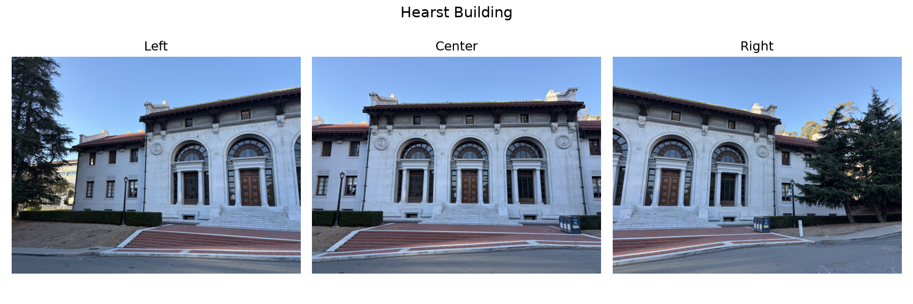
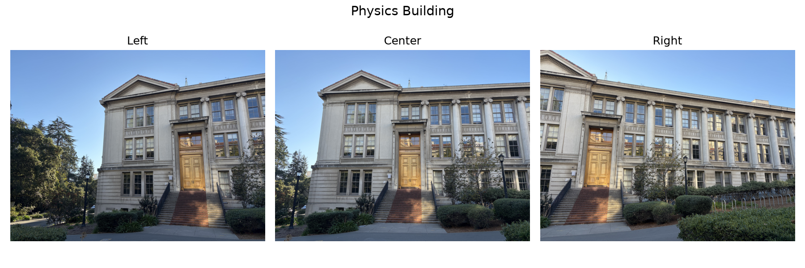
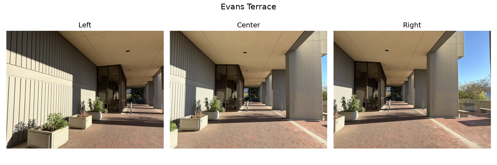
A.2: Recover Homographies
I manually select 12 matching points for each left-to-center and right-to-center pair. Matching numbers identify the same scene point in both images. The center image is the reference, so I only need two homographies per scene.
My computeH function solves for the eight unknown entries of H, fixing h33 = 1. For a source point (x, y) and its matching center-image point (u, v), the homogeneous relation is [u, v, 1]T ∝ H[x, y, 1]T. Dividing by the third coordinate gives:
v = (h21x + h22y + h23) / (h31x + h32y + 1)
Rearranging produces two rows of the linear system Ah = b for each correspondence:
[ x y 1 0 0 0 −ux −uy ] h = [ u ] [ 0 0 0 x y 1 −vx −vy ] [ v ] h = [h₁₁, h₁₂, h₁₃, h₂₁, h₂₂, h₂₃, h₃₁, h₃₂]ᵀ
At least four point pairs are needed to recover H. Using twelve accurate matches helps reduce sensitivity to individual clicking errors. With 12 correspondences, A has size 24 × 8 and b has 24 entries. I solve this overdetermined system with NumPy’s least-squares solver and place the eight recovered coefficients into H, with h33 = 1.
Below each correspondence pair, I show the recovered matrix mapping the outer view into the center view. Matrix entries are rounded for display. I also report the mean Euclidean distance between the projected source points and their selected matches, in center-image pixels. This measures agreement with the same points used to fit H.
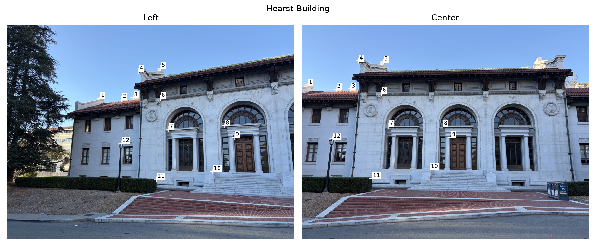
Mean reprojection error: 0.92 pixels.
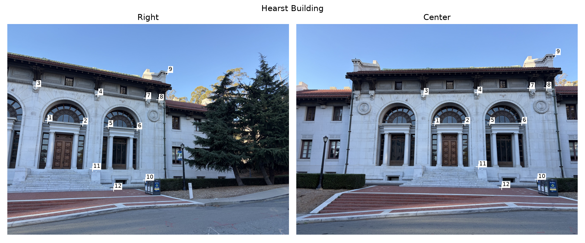
Mean reprojection error: 1.65 pixels.
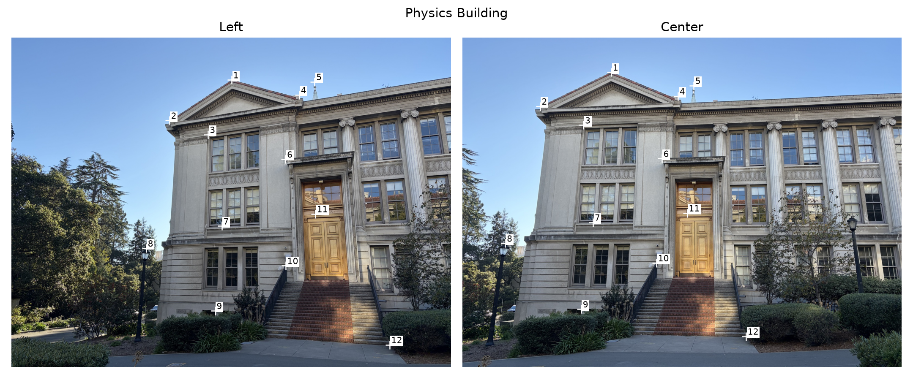
Mean reprojection error: 1.46 pixels.
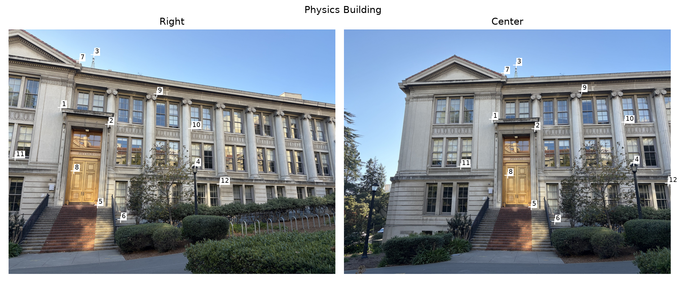
Mean reprojection error: 0.95 pixels.
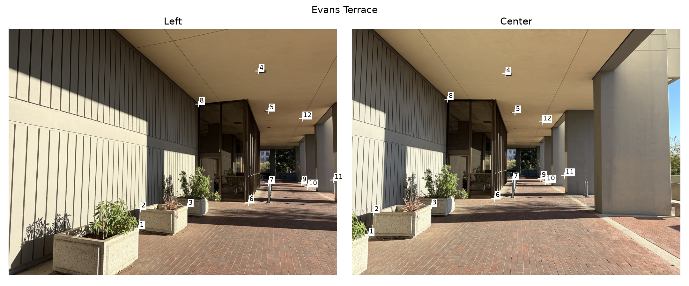
Mean reprojection error: 2.64 pixels.
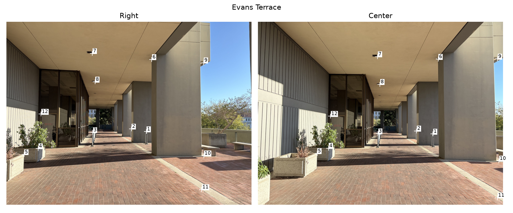
Mean reprojection error: 2.24 pixels.
A.3: Warp the Images
I implement warpImageNearestNeighbor and warpImageBilinear using inverse warping. First, I transform the four source-image corners through H and round the minimum coordinates down and the maximum coordinates up to find the output bounds. These bounds can include negative coordinates. For each output pixel, I apply H−1 and divide by the homogeneous coordinate to find the corresponding source location. Sampling every output location avoids holes inside the warped image.
I treat integer coordinates as pixel centers. Nearest neighbor rounds the source coordinates and copies one pixel. Bilinear interpolation uses the four surrounding pixels. Let i = floor(x), j = floor(y), a = x − i, and b = y − j. The interpolated color is:
+ (1 − a)bI(i, j + 1) + abI(i + 1, j + 1)
Both interpolation methods are implemented from scratch. Source locations outside the image remain transparent, while valid samples receive alpha = 1. This separates empty canvas pixels from actual black image pixels. At the source boundary, bilinear neighbors are clamped to the last valid row or column.
For rectification, I manually select four corners in top-left, top-right, bottom-right, bottom-left order and map them to an axis-aligned rectangle. These four matches define the target geometry for each planar object.
Microchips exhibit. I rectify panel 5 into a 400 × 800 image by mapping the selected corners to (0, 0), (399, 0), (399, 799), and (0, 799), respectively. The 1:2 width-to-height ratio is chosen for display; I did not measure the panel’s physical dimensions. The original image and both rectifications are followed by an enlarged text comparison.
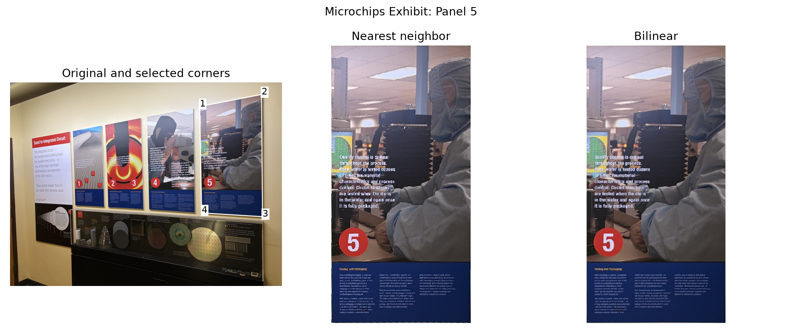
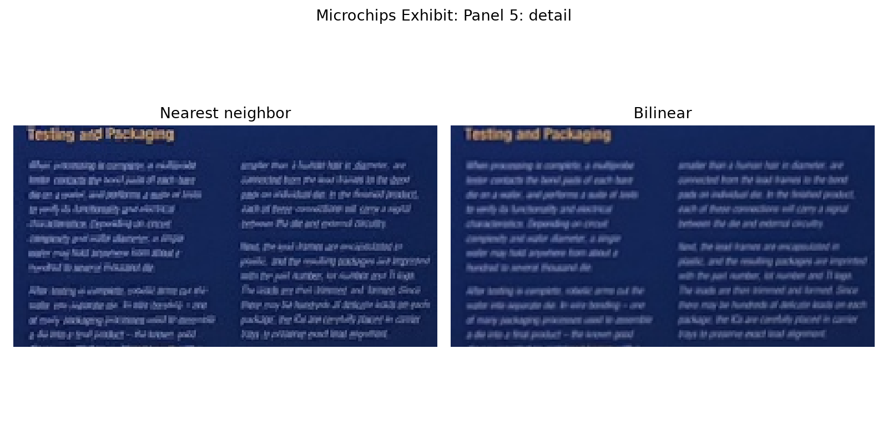
Wheeler marker. I map the selected inner square to an 800 × 800 square with destination corners (0, 0), (799, 0), (799, 799), and (0, 799), in the same order, assuming the plaque is square. I retain 25 pixels of surrounding warped image on each side, giving an 850 × 850 display so the border remains visible.
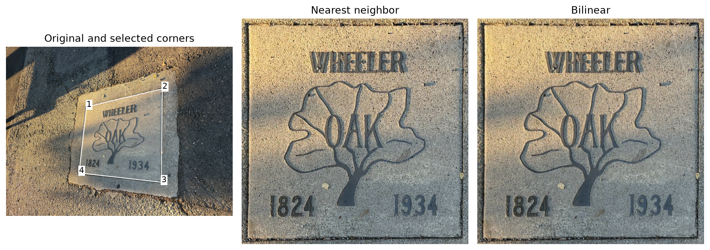
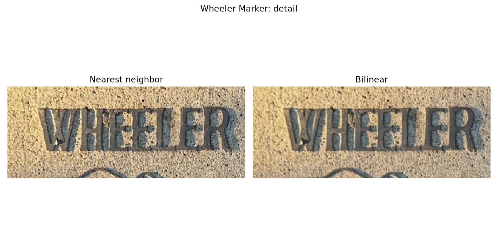
Nearest neighbor produces more jagged letter edges and a blockier surface texture. Bilinear interpolation smooths these transitions, but also softens small text. Neither method recovers detail missing from the source photograph.
The table reports median runtimes over three calls to each warp function. Timing includes bounds calculation, canvas allocation, inverse mapping, and interpolation, and excludes image loading, saving, and plotting. For rectification, the entire cropped-source warp is timed before extracting the displayed rectangle, so the timed canvases are larger than the final images.
| Rectification | Timed canvas | Nearest neighbor | Bilinear |
|---|---|---|---|
| Microchips exhibit | 434 × 935 | 0.041 s | 0.071 s |
| Wheeler marker | 1048 × 1328 | 0.102 s | 0.169 s |
Nearest neighbor is faster in both examples because it reads one source pixel per sample. Bilinear requires four samples and their weights, taking about 1.7 times as long here. I use bilinear interpolation for the mosaics to reduce the jagged edges introduced by warping.
A.4: Blend Images into a Mosaic
Each mosaic combines the three source photographs shown in A.1. I warp the left and right images into the center image’s coordinate system and use the identity transformation for the center. The shared canvas covers the union of all three transformed image bounds, with an offset to place negative coordinates inside the output array.
Directly overwriting pixels creates abrupt seams where the photographs differ in brightness. For feathering, I give each source pixel a weight based on its distance to the nearest image edge. The weights are largest toward the interior and remain slightly positive at the boundary. I warp both the RGB image and its weight map with bilinear interpolation, mask out invalid pixels, and normalize the weighted color sum:
Here Ĩk and ŵk are the warped color and valid weight from image k. Where only one image contributes, its color is preserved. Where no image contributes, the canvas stays transparent.
For Hearst Building, the first image uses direct overwriting and the second uses feathering, with the same alignment in both. Notice the sharp brightness boundaries in the sky before blending and the smoother transitions afterward. The Physics Building and Evans Terrace results below use the same feathering method.
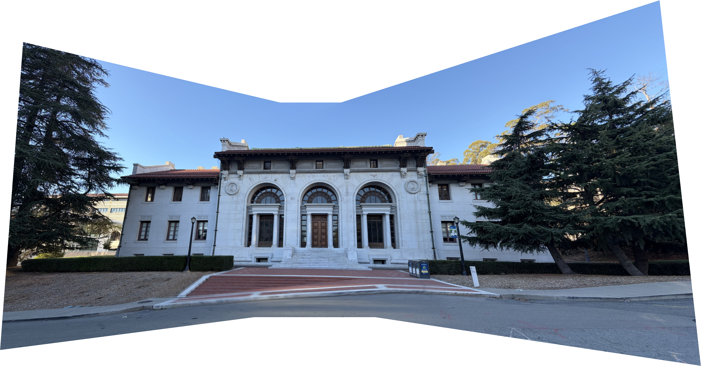
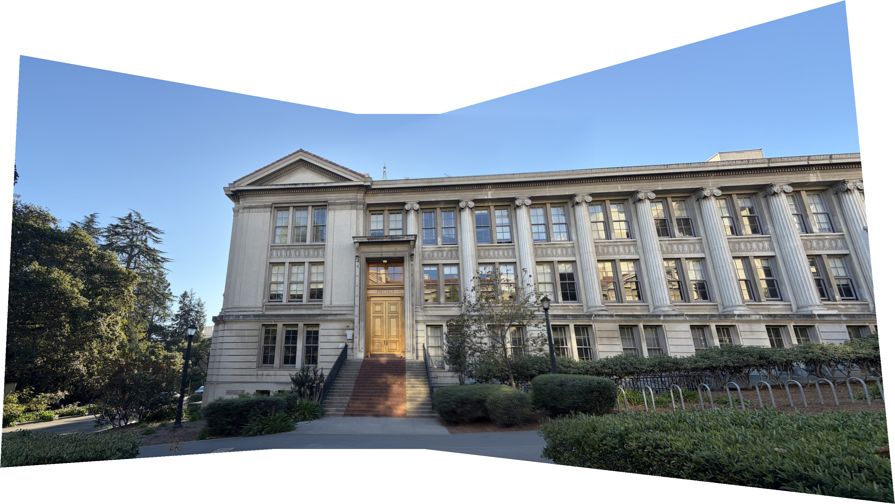
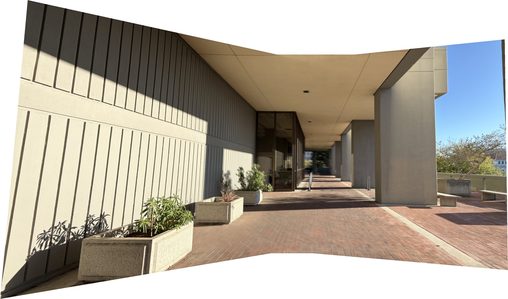
The buildings line up well, and feathering makes the brightness changes less noticeable. Some details, especially the plants at Evans Terrace, still look slightly doubled. Small shifts in the camera’s position can cause objects at different depths to line up differently, which a single homography cannot fully correct. Blending softens these artifacts but does not fix the alignment. I kept the uneven edges created by warping so that none of the image content would be cropped out.
This project showed me that accurate correspondences and the capture geometry matter before blending. Inverse warping gives a consistent way to sample the output, while feathering improves transitions between images that are already approximately aligned.
Fun Extra: Eight Views of Sutardja Terrace
I took eight overlapping photographs on Sutardja Terrace for a larger mosaic. Instead of mapping just a left and right view directly to the center, this mosaic uses correspondences across all seven neighboring pairs. I compose their homographies into image 4’s coordinate system. Nine additional rail-post matches in two pairs help improve the foreground alignment.
I use the same bilinear inverse warping and feather blending as above, cropping redundant overlap from the working copies to reduce ghosting. All eight photographs still contribute. Some foreground alignment errors and stretching toward the outer edges remain.
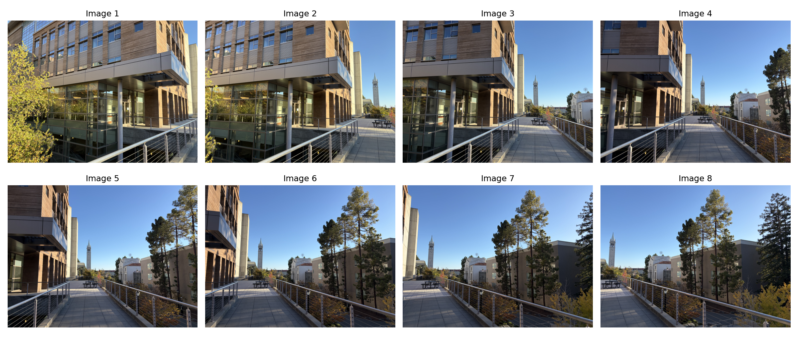
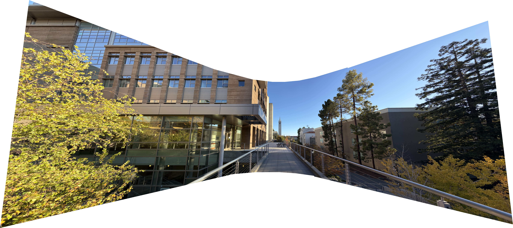